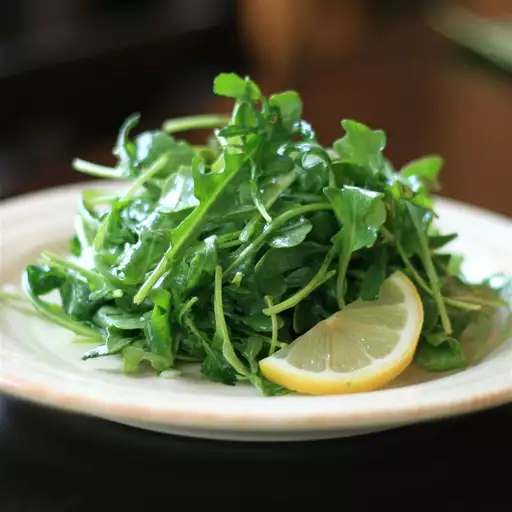

1 Просто приготовленная на пару спаржа
Эта приготовленная на пару спаржа нежная и вкусная!
Попробуйте также использовать заправку для винегрета вместо сливочного масла.
Ингредиенты
- 1 пучок побегов спаржи
- 1 чайная ложка сливочного масла
- ¼ чайной ложки соли
Приготовление
- Налейте 3 стакана воды в нижнюю половину пароварки. Добавьте масло и соль и доведите до кипения.
- Обрежьте у спаржи сухие кончики. Если копья толстые, слегка очистите их овощечисткой.
- Поместите стебли спаржи в верхнюю половину формы для пароварки.
Готовьте на пару, пока спаржа не станет мягкой, от 5 до 10 минут в зависимости от толщины.
Совет по рецепту
Если у вас нет пароварки, вы можете использовать корзину для пароварки, вставленную в большую кастрюлю.
2 Простой весенний салат Сэнди

Лимонный сок в сочетании с мягким рисовым уксусом образует
одновременно бодрящую и слегка сладкую заправку для молодых нежных салатов.
Ингредиенты
- 1 лук-шалот, мелко нарезанный
- 1 чайная ложка дижонской горчицы
- ¼ чайной ложки соли
- ¼ стакана оливкового масла экстра-класса
- 2 столовые ложки свежевыжатого лимонного сока
- 2 столовые ложки рисового уксуса
- 16 чашек рукколы
Приготовление
- Смешайте лук-шалот, мед, горчицу и соль в банке с крышкой;
добавьте оливковое масло, лимонный сок и уксус.
Накройте банку крышкой и встряхивайте, пока заправка не загустеет.
- Положите рукколу в миску и полейте зелень соусом; бросить в пальто.
Примечание повара:
Вы можете приготовить большую порцию заправки, просто увеличив ее вдвое или втрое,
и хранить ее в холодильнике неделю или две. Эту заправку можно также использовать
в качестве маринада для курицы или толстой рыбы с твердой мякотью.
Рукколу можно заменить любым сортом весеннего салата, например, салатом Бибб или красным листом.
3 Зубчатое ананасовое суфле
Это чудесное блюдо из ананасов, которое можно подавать с ветчиной.
В моей семье это любимое блюдо на Пасху. Яичные белки придают ему легкость.
Ингредиенты
- 3 яйца, белки и желтки отдельно
- 1 ½ стакана белого сахара
- ½ стакана сливочного масла
- ½ стакана молока
- 1 банка (15 унций) измельченного ананаса, слить воду
- 3 чашки нарезанного кубиками хлеба
Приготовление
- Разогрейте духовку до 350 градусов F (175 градусов C).
- Взбейте яичные белки до образования пены в большой стеклянной или
металлической миске до образования жестких пиков. Поднимите венчик
или венчик прямо вверх: яичные белки должны образовать острую вершину, сохраняющую форму.
- Взбейте яичные желтки, сахар, масло и молоко в большой миске.
Добавьте ананас и хлеб. Слегка смешайте яичные белки с ананасовой смесью,
затем выложите смесь в большую форму для запекания.
- Выпекать в разогретой духовке до золотистого цвета, 35–45 минут.